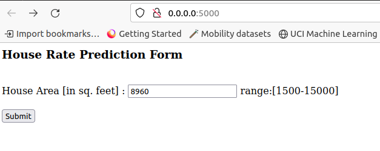
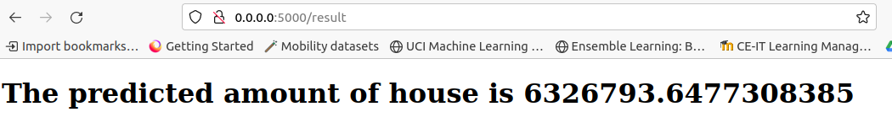

Docker Swarm
Tutorial of docker swarm from the Docker Official Documentation
The tutorial of docker swarm can be refered from the following link:
It majorly covers: - Get started with swarm mode - Create a swarm - Add nodes to the swarm - Deploy a service - Inspect the service - Scale the service in the swarm - Delete the service running on the swarm - Apply rolling updates to a service - Drain a node on the swarm
One must understand the different docker command to create the swarm network, add the nodes to the swarm network, create the service, inspect the service, apply the rolling update, and to delete the service.
Create your own swarm cluster and Deploy app in Docker Swarm
Here, we create our own swarm cluster and deploy the house rate prediction model in the docker swarm using the following steps.
Step-1: Create the swarm cluster using following command:
foo@bar:$ docker swarm init --advertise-addr <MANAGER-IP>
where <MANAGER-IP> is the IP address of your node machine. The above command will give the output as following:
Swarm initialized: current node (dxn1zf6l61qsb1josjja83ngz) is now a manager.
To add a worker to this swarm, run the following command:
docker swarm join \
--token SWMTKN-1-49nj1cmql0jkz5s954yi3oex3nedyz0fb0xx14ie39trti4wxv-8vxv8rssmk743ojnwacrr2e7c \
192.168.99.100:2377
To add a manager to this swarm, run 'docker swarm join-token manager' and follow the instructions.
Step-2: Add the nodes as the managers and the workers
The next step is to add the new nodes in the swarm network using the information obtained as a response in the above command. The docker swarm join command with the appropirate response information needs to be executed from the node moachine that needs to join the swarm network.
Step-3: Deploy the service for house rate prediction
The next step is to deploy the docker service house_rate_prediction_service for house rate prediction using the docker image house_rate_prediction_deploment on the port 5000 using the following command:
foo@bar:$ docker service create --replicas 1 --name house_rate_prediction_service -p 5000 house_rate_prediction_deploment
Output of docker service
After, the successful convergence of the service, one may attemp to use the house rate prediction model which is deployed on the on the following link: 0.0.0.0:5000/
HTML form to get value from user

View displaying the house rate prediction to the user

Step 4: Scale the service
Let us assume that we want to scale the replica of the docker service corresponding to the house rate prediction to 10. It could be achieved using the following command:
foo@bar:$ docker service scale house_rate_prediction_service=10
Step 5: list the services and inspect them
In this step, you will list all the services of the docker swarm and inspect the house_rate_prediction_service service.
Command to list all the services:
foo@bar:$ docker service ls
Command to inspect the service:
foo@bar:$ docker service inspect --pretty house_rate_prediction_service
Step 6: Information about the service:
To check which node is executing the service house_rate_prediction_service, execute the following command in the terminal of manager node:
foo@bar:$ docker service ps house_rate_prediction_service
Step 7: Delete the service
In the final step, we delete the house_rate_prediction_service from the docker swarm.
Command to delete the service:
foo@bar:$ docker service rm house_rate_prediction_service
Finally check whether house_rate_prediction_service is deleted or not using following command:
foo@bar:$ docker service ps house_rate_prediction_service
The above command would return empty list indicating that there is no node that executes the house_rate_prediction_service service.